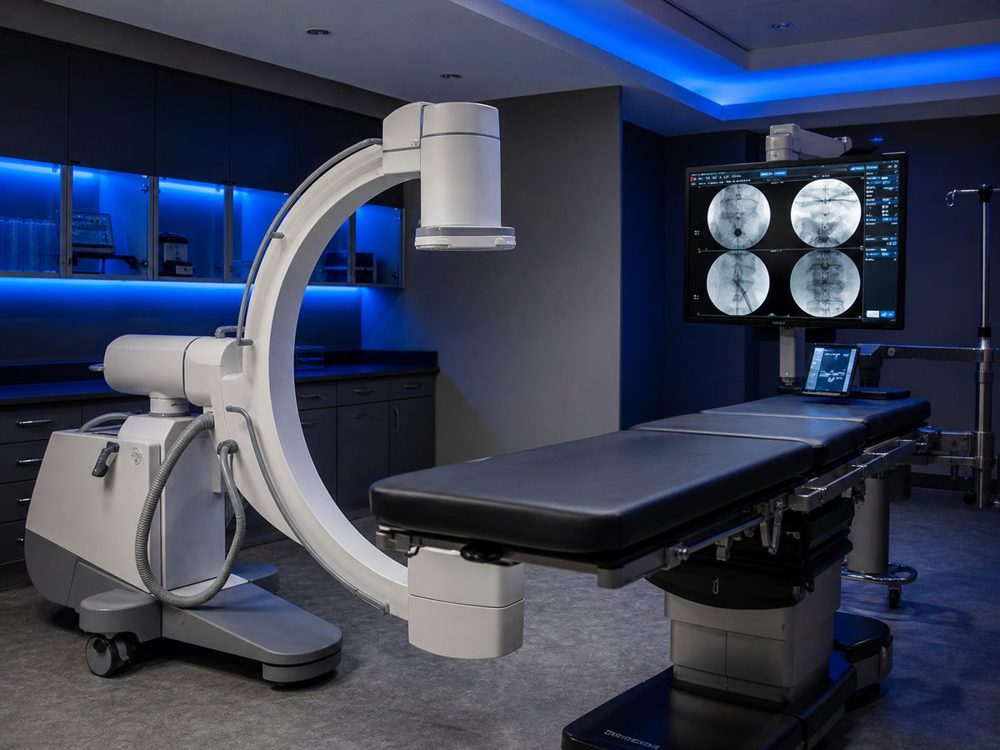
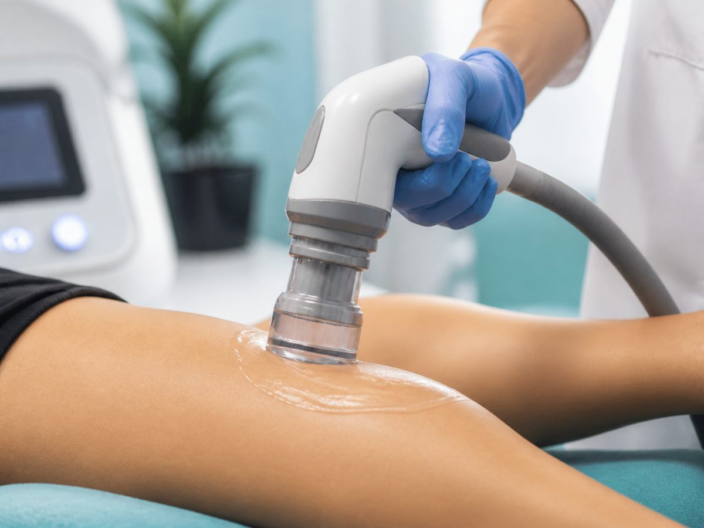

비수술치료
정확한 위치에, 필요한 만큼만. 진단 장비로 원인을 확인하고 가장 덜 침습적인 치료부터 시작합니다.

01 — INJECTION
C-arm 정밀영상
신경주사 치료
통증의 원인이 되는 신경과 관절은 몇 밀리미터 차이로 위치가 달라집니다. C-arm 투시 장비와 초음파로 바늘의 위치를 실시간으로 확인하며 약물을 주입합니다.
경막외 신경주사, 신경근 차단술, 관절강 내 주사 등 증상에 맞는 방법을 선택합니다. 시술 시간은 10–20분 내외입니다.
영상으로 위치 확인
초음파와 투시 장비로 신경과 관절의 위치를 확인합니다.
정확한 부위에 주입
바늘 끝의 위치를 보며 필요한 부위에만 약물을 주입합니다.
경과 확인과 재활
시술 후 반응을 확인하고 도수재활로 회복을 이어갑니다.

02 — SHOCKWAVE
체외충격파
만성 통증을 깨우는 자극
오래된 힘줄과 근막은 스스로 회복하지 못하는 경우가 많습니다. 체외충격파는 음파 에너지로 국소 혈류를 늘리고 조직 재생을 유도합니다.
석회성 건염, 족저근막염, 테니스 엘보, 만성 어깨 통증에 적용합니다. 시술 후 일상생활은 바로 가능합니다.
- Time
- 10 – 15분
- Frequency
- 주 1–2회
- Session
- 3 – 6회

03 — REHABILITATION
1:1 도수재활센터
다시 아프지 않는 몸으로
통증이 줄어도 원인이 남아 있으면 다시 아픕니다. 전담 치료사가 관절 가동범위와 근력을 단계적으로 회복시킵니다.
- 도수치료 — 관절 가동술과 연부조직 이완
- 운동치료 — 코어·견갑·하체 안정화 프로그램
- 기능 평가 — 보행·체형·가동범위 측정 후 계획 수립
- 생활 교정 — 자세·수면·운동 습관까지 함께 조정
04 Diagnosis
보이지 않으면,
치료할 수 없습니다
진단 장비는 치료의 출발점입니다. 필요한 검사를 그 자리에서 진행해 치료 시기를 놓치지 않습니다.
MRI · CT
디스크와 연골, 골 구조를 정밀하게 확인합니다.
C-arm 투시
실시간 영상으로 시술 부위를 확인합니다.
근골격 초음파
힘줄과 인대, 신경의 상태를 실시간으로 봅니다.
체외충격파
만성 힘줄·근막 통증의 재생을 유도합니다.
05 Facility
원내 둘러보기
대기부터 진료, 치료, 재활까지 한 층에서 이어집니다. 사진을 눌러 크게 볼 수 있습니다.


NON-SURGICAL FIRST